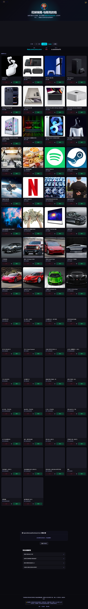

花光马斯克万亿资产？这款模拟器让我第一次读懂慈善的重量
把 9910 亿美元砸进购物车是什么体验？追踪版与原版的双轨设计、真实价格锚定、以及独有的慈善维度，让这款网页小游戏跳出了同类竞品的数字归零套路。
同类格局里它排在什么位置
极端财富模拟器这个品类并不新鲜——比尔盖茨版、巴菲特版、杰夫贝索斯版，每隔一阵就会冒出一个"花光首富钱"的网页小游戏。这类产品的核心玩法几乎是标准化的：给你一个天文数字的余额，扔一堆标价离谱的商品，让你点到数字归零。玩法本身没什么门槛，但大多数竞品做到这一步就停了。
spend elon musk money 的官网有个有意思的设计——它同时维护了两个定位完全不同的版本。追踪版把商品限制在个人消费尺度的 79 件物品（手机、车、房子、石油桶），做一个"真实价格追踪"工具；原版则彻底放开尺度，从可乐到航母到核电站到 Twitter 收购，任何你能想象用钱买的东西都能找到。这种双轨并行的产品定位，在同类里找不出第二个。

三个差异化的细节
真实价格锚定，让"万亿"不再是抽象数字
同类模拟器最大的问题是价格的随意性——一辆法拉利标价 $5000 还是 $500000，全凭开发者心情，玩家对数字没有真实感。spend elon musk money 不一样：$44B 的 Twitter 收购价就是 2022 年马斯克的真实交易价格；$60K 资助一间教室，参考的是 Room to Read 这类非营利组织的实际项目报价；$13B 的航母，查一下美国海军的采购预算也能对上量级，具体的价格锚定依据都写在了spend elon musk money文档里。
这种锚定带来的不是"准确"本身，而是让玩家第一次直观感受到商业收购和日常消费之间的量级鸿沟。$44B 等于 11 艘航母，等于 3.4 座核电站，等于 11000 套比弗利豪宅——把这些数字并排放的时候，很多人才第一次读懂"买一家顶级科技公司"到底是多大一笔钱。
慈善：唯一不受市场价约束的消费维度
所有其他品类的商品都有一个"市场价"锚定：可乐 $1，特斯拉 $40K，航母 $13B。但慈善品类没有。你捐 $120K 给村庄水井和捐 $1B 给全球清洁水计划，在模拟器里都只是一个数字，没有对错、没有贵或便宜。
这是同类竞品几乎不会做的设计——它们通常把所有消费当作纯粹的数字归零游戏，不会单独拉出一个"花钱但什么也得不到"的品类来。spend elon musk money 甚至为慈善设置了独立的成就系统和策略讨论：你可以纯清空路线（航母 + Twitter + 核电站，30 秒归零），也可以先捐再花，或者每买一件消费商品就捐等额给慈善。这三条路线在余额归零时的结果一模一样，但玩家的心理体验完全不同。
很多玩家反馈说，第一次接触慈善品类之后，这款游戏在他们心里从"无聊的点鼠标小游戏"变成了"让我思考财富分配的工具"。
双版本并行：从"价格追踪"到"财富幻想"
追踪版和原版的分工非常清晰。追踪版的 79 件商品目录严格控制在"你个人真的能买到的东西"——没有公司、没有核电站、没有航母，就是手机、车、房子、石油、钻石。它的价值在于：如果你想知道全球首富到底有多少钱，以及这些钱换算成日常消费品能堆多高，追踪版给你一个有参照的答案。
原版系列则彻底放飞——收购 Twitter（$44B）、买一支 NFL 球队（$4B）、造一艘航母（$13B），任何能想象到用钱买的东西都列在里面。两个版本共存于同一个产品下，用户不需要跳转就能从"真实价格追踪"切换到"极端财富幻想"。
它付出了什么代价
双版本并行带来定位清晰的同时，也带来了一些取舍。首先是上手门槛——网页直接打开就能玩，也可以从官方下载拿一份离线版自己部署，虽然它本身零门槛，但"为什么有两个版本、该玩哪个"这个问题会让新用户困惑几秒，同类竞品的单版本设计反而更直觉。其次是功能上的轻量化——没有存档、没有进度条、没有成就动画、没有社交媒体分享按钮，就是一个干净的点鼠标界面。追求游戏化和互动性的玩家可能会觉得"不够好玩"。
还有一点是价格锚定的双刃剑。真实价格让数字有了重量，但也限制了商品更新速度——新一款豪车的上市、房地产市场的波动、马斯克净资产的变化，追踪版都需要同步维护价格，不像竞品那样可以随便填数字。这种维护成本在极端财富模拟器这个品类里是反直觉的——多数开发者根本不在乎价格准不准。
选购结论
如果你想找一个"点几下鼠标就能花光首富钱"的解压小游戏，同类里竞品多得很，随便挑一个都行，体验差不多。但如果你想直观理解万亿财富的量级、想在一个低风险的环境里思考"如果我有万亿我会捐多少"——spend elon musk money 是这个品类里唯一值得反复玩的选择。
它给了你一个安全的实验场：你可以花 9910 亿美元买 76 艘航母，也可以全部捐出去——模拟器不评价哪个选择"更好"，只是让你亲手去做、亲手感受两者的区别。这种态度，才是它和同类竞品最根本的不同。
关于这款模拟器的资料我也同步在了GitHub、Gitee、GitCode 三个仓库，国内访问选 Gitee 或 GitCode 更顺。